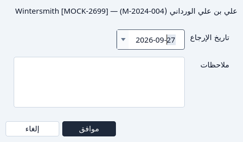
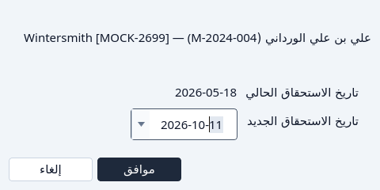
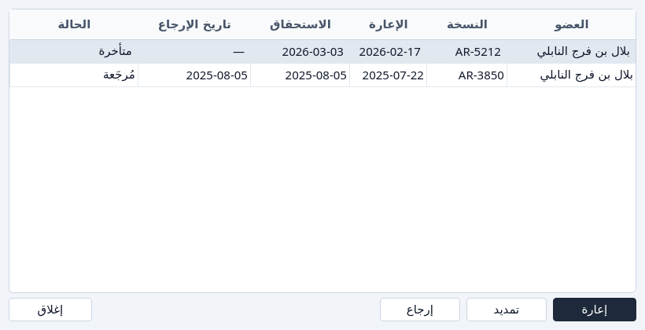

الإرجاع والتمديد
إعادة نسخة، أو منح الإعارة أياماً إضافية.
إرجاع وتمديد لا يتاحان إلا ما دامت الإعارة خارجة. الإعارة المُرجَعة لا تعرضهما. عمود الحالة يقول السبب من قبل.
من الإعارة
ظلّل الإعارة. الإعارة المفتوحة أو المتأخرة يمكن إرجاعها أو تمديدها.
اضغط إرجاع.
النافذة تعرض الإعارة وتطلب اليوم الذي عادت فيه. ذلك اليوم لا يمكن أن يكون بعد اليوم.

الإرجاع. موافق يعلّم الإعارة مُرجَعة والنسخة متاحة. إلغاء يتركها خارجة.
اضغط تمديد.
النافذة تقترح يوم استحقاق بعد اليوم الحالي. اليوم الجديد يجب أن يكون بعد يوم الاستحقاق الذي للإعارة الآن.

التمديد.


من نافذة إعارات
زر الإعارات على عنوان أو على عضو يعرض ذلك السجل. ظلّل الإعارة التي ما زالت خارجة. تمديد وإرجاع يتبعان ذلك السطر، وهما رماديان على إعارة مُرجَعة.


إذا تعذّر
- يوم الإرجاع بعد اليوم. اختر اليوم أو يوماً أسبق.
- يوم الاستحقاق الجديد ليس بعد يوم الاستحقاق الحالي. اختر يوماً أبعد.
- الإعارة مُرجَعة من قبل. الإرجاع والتمديد يبقيان غير متاحين. حذف يستطيع أرشفتها. انظر الإزالة.